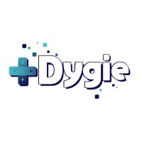

J'ai réalisé mon stage de 1ère année chez Dygie, une entreprise spécialisée dans le jeu vidéo. Il s'est déroulé du 19 mai au 26 juin 2025 en distanciel, puisque Dygie n'a pas de locaux propres. Dygie développe un jeu, Lusha, qui a pour but d'aider les enfants, et en particulier ceux atteints de TDAH (Trouble du Déficit de l'Attention avec ou sans Hyperactivité), à s'organiser dans leur vie quotidienne, en les aidant à former des routines.

Lusha est un jeu d'aventure développé avec le moteur de jeu Unity.
Il utilise le C#.
Il reprend les codes d'un platformer en 3D (exploration linéaire de niveaux), tout en intégrant des éléments de RPG (inventaire, fabrication d'objets).
L'idée derrière ce jeu, c'est que pour pouvoir explorer plus de niveaux, il faut compléter des tâches dans son agenda de la vraie vie (exemple: se brosser les dents, faire ses devoirs...).
Mes missions ont été assez variées:
J'ai réalisé mon stage de 2ème année chez Digiplace, une entreprise spécialisée dans le développement, l'hébergement et le support web. Ce stage s'est déroulé du 12 janvier au 20 février 2026 dans les locaux de l'entreprise à Saint-Mandé (94).
Mes missions ont été variées: